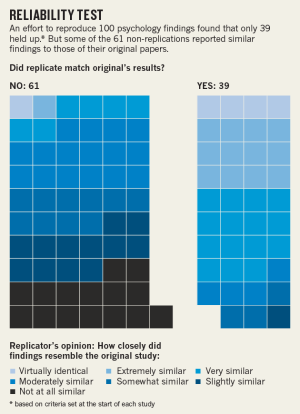

"A rule of thumb among biotech ... is that half of published research cannot be replicated."

Nature, Aug 2015
Over half of psychology studies couldn't be reproduced.
Dat Project
Why?
data is too big
code/data is closed-source
infrastructure is proprietary
deployment costs money
code/data is lost
code is hard to install
code is old
unfortunately, its not that easy. github is steadily increasing in popularity, but many still find it too cumbersome.
How do scientists reproduce research?
we had to look into how scientists actually do reproduce research today and try to build a solution for them.
How do data scientists collaborate today?
collaboration (n.) /kəˌlabəˈrāSH(ə)n/
computers working together to produce or create something.
shared university network drives
and email. :(
Mount dropbox into aws!
domain experts aren't developers
domain experts aren't developers.
a domain expert, like a data scientist, will want to focus on the algorithms. the math. the people. the stars.
they don't want to fiddle with configuration. they don't want to endlessly search how to install that C library. or how to resolve conflicts between dependencies. or how to install
domain experts don't want to use git.
git is for developing source code, and thats ok.
git could work for 90% of the cases, but its an interface created for developers, not for domain experts.
But, domain experts need something like git.
How do you build a frictionless git-like tool for data?
the hardest problem we have always had is the interface to dat.
how can we make something that acts like git, but is frictionless?
the tool should be simple.
the tool should be composable. so that developers, data scientists, and domain experts can work together.
the tool should just work.
Why did we chose Node?
Streams-first (good for big files)
Modularity-first (seprate components)
C library integrations (leveldb)
Desktop/web apps (fast to develop)
The Graph.
Merkle Directed Acyclic Graph
a merkle tree allows us
first node in the graph is the head. no parents (links).
var node = {links: [], value: 'a'}
var hash = require('crypto')('sha256')
var head = hash(node.value) + hash(node.value.length)
adding a node that points to the head
var node = {links: [head], value: 'b'})
var child = hash(node.value) + hash(node.value.length) + hash(head)
aa4da (head)
|
bbd32 (new child node)
aa4da
|
bbd32
/ \
ccdef ddbdf <- lets merge these two
aa4da
|
bbd32
/ \
ccdef ddbdf
\ /
ee0bf <- new node here for merge
// adds hash(data.length) automagically
var sha = require('framed-hash')('sha256')
function add (node) {
// add the node's value to the hash.
sha.update(node.value)
// add hash of all link nodes.
for (var i = 0; i < node.links.length; i++) sha.update(node.links[i])
// get the new unique key for the node
return sha.digest()
}
What is
node.value
?
because we are hashing node.value, if we are storing a lot of data in it, it will be slow. this is the problem with git.
node.value is..
git the entire file (slow!)
git lfs a pointer to the file (faster)
dat a pointer to a file or list of files (a filesystem!)
composable means separate.
require('dat-graph') // merkle DAG.
require('dat-blob-store') // blob store
in dat, each graph node points to the content-addressable blob store.
Replication
computer 1 wants to replicate computer 2
this makes it easy to switch out the blob store backend for something else. it makes it faster and easier
 Economist, Oct 2013
Economist, Oct 2013


 shared university network drives
shared university network drives
 and email. :(
and email. :(
 Mount dropbox into aws!
Mount dropbox into aws!


 big thanks
big thanks